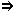

*teni
(tr)
- 1.
-
Malhelpi formoviĝon per fizika kontakto.
- a)
- (iu, ion, en korpoparto aŭ per ĝi)
Esti kun la objekto en la manoj, brakoj kaj simile, malhelpante,
ke ĝi falu aŭ moviĝu for de la koncerna
korpoparto:
teni bastonon;
vi devas teni la kovrilon en la mano
[1];
ŝi tenis en la brakoj ĵusnaskitan infaneton
[2];
[la hundo] reaperis, tenante en sia buŝo
grandan monujon
[3];
objekton unu fojon kaptitan [la polipoj] tenis
forte per centoj da malgrandaj brakoj
[4];
la koboldo kaptis la mirindan libron ... kaj
tenis
ĝin forte per ambaŭ manoj
[5];
li tenis inter la fingroj malgrandan rozokoloran paperon
[6].
- b)
- (iu, ion, per ilo)
Teni 1.a ion,
ligitan al la koncerna objekto kaj malhelpantan,
ke ĝi moviĝu for de oni:
li plu ne bezonis tenadi la pupon (per
ŝnuroj), ĝi povis mem danci
[7];
teni per feraj ligiloj
[8].
- c)
- (io, ion)
Peri la agon de iu, kiu tenas1.a
aŭ tenas1.b:
Via mano min kondukos, kaj Via dekstra mano min tenos
[9];
ŝiaj fingroj tenas la ŝpinturnilonZ.
- d)
- (iun, je korpoparto)
Teni (1.a,
1.b,
1.c)
korpoparton de tiu, por zorge malhelpi foriron, falon, aŭ
por montri intimecon:
teni infanon per la mano, sur la genuoj;
teni bovon je la kornojB;
teni [kolombon] je la piedoj
[10];
teni [la birdon] per rubando, ligita
ĉirkaŭ unu el ĝiaj piedetoj
[11];
Kant amis la hundeton, sed prefere tamen tenus ĉe la
mano fileton
[12].
kaptipreniporti - 2.
- (figure)
Restigi.
- a)
- (iun)
Restigi en iu loko aŭ stato, malhelpante ties foriron,
liberiĝon:
teni iun en malliberejoB;
lia fianĉiĝo tenas lin malproksime de
ĉiuj diboĉaĵoj
[13];
la ŝnuroj de lia peko lin tenosZ;
la febro tenas lin;
lia promeso tenas (ligas, devigas) lin;
mi estas tenata de miaj okupoj.
- b)
- (ion)
Metinte tion en iun lokon, restigi ĝin tie, malhelpante,
ke iu ĝin forprenu, aŭ ke ĝi kvazaŭ
meminiciate foriru:
teni cigarojn en ĉambroZ,
en skatoletoZ;
nuntempe tiu ebleco estas tenata en malvastaj limoj;
Gordens, kun la manoj en la pantalonpoŝoj, tenis la
rigardon demande sur la verkisto
[14];
sub seruro promesojn tenu, sed doninte ne reprenu
PrV;
sako alenon ne tenas, ĝi baldaŭ elvenas
PrV;
la glaseto kun la blukolora ligna piedo ne dronis, la ligna
ŝtipo tenis ĝin supre
[15].
- c)
- (korpoparton)
Restigi en ia pozicio:
teni la manojn laŭlonge de la krurojZ;
teni la piedojn sur benketoZ;
teni la okulojn en streĉo
(daŭre observi)
PrV;
mi tenis mian langon en la buŝo (ne
parolis), per lipoj kunkudritaj
[16];
kiu langon ne tenas (ne singarde parolas), mem
sin malbenas
PrV;
teni rekte la kaponZ;
alte teni siajn okulojn kaj levi siajn
palpebrojnZ;
malvirtulo tenas sian vizaĝon aroganteZ;
teni la manojn eltirite en la aero
[17],
la orelojn streĉite
[18],
la okulojn malfermite
[19];
teni la okulojn nefermitaj
[20],
la bekon fermita
[21].
- d)
-
Zorgi, ke iu aŭ io restu en ia stato:
teni la amason en spirita sklaveco;
teni la landon en malĝojoZ;
amu edzinon plej kore, sed tenu ŝin bonmore
PrV;
tenata en honoro, kiel maljuna avo
[22];
kanti pri ĉio, kio estas tenata kaŝite tie
malantaŭ seruro kaj riglilo
[23];
vi devas teni la ĉambron en bona ordo
[24];
teni [sian neston] en bona stato
[25];
bonstato estis sentebla en la domo ... kaj
ĉio estis bone tenata
[26];
oni tenas preta kolekton da tute intence fabrikitaj
skribaĵoj
[27];
pli longe ol ĝis morgaŭ matene mi ĉiel ne
povas teni ilin en provizora aresto
[28];
teni iun antaŭ la okuloj
(ne ĉesi lin observi)
[29].
- e)
- (ion abstraktan)
Zorgi, ke tio restu senŝanĝa, ne perdiĝu:
teni ion en la kapoK (konstante
pensi pri tio);
teni (ne malkaŝi, ne perfidi)
sekreton;
obstine teni (ne ŝanĝi) sian
opinion;
la memoro ne bone tenadis la vortojnZ;
teni memoron (memori) pri io;
teni fidelecon al iu (resti fidela);
teni (plenumi) sian promesonZ;
teni la vortonZ;
tenu forte la instruon kaj ne forlasu ĝin, konservu
ĝinZ;
konservu prudenton kaj via buŝo tenu
scionZ;
dube estas, ĉu tiuj neologismoj tenos la
vivonZ;
li scias konstante teni la atenton de la
leganto.
Rim.:
Egale bonaj estas „teni la kapon rekte“ aŭ
„rekta“, „teni ion sekrete“ aŭ
„sekreta“: la adverbo estas maniera adjekto kaj la
adjektivo
estas objekta predikativo. Tamen, se temas pri participo, la
adverbaj
formoj estas evitindaj, kvankam klasikaj, ĉar ilia uzo kiel
maniera
adjekto ne estas kutima. Aperas do risko kompreni, ke temas pri
participa propozicio, kio kondukus al tute alia senco, ĉar
la
subjekto de la participo devas esti tiu de la ĉefa verbo, ne
ĝia objekto.
- 3.
- (figure)
Havi en sia povo.
- a)
- (iun)
Havi moralan povon super iu, ekz-e kiel gepatroj super la
gefiloj:
ili devus teni min pli severe, pensis Inger, ili devus
elpeli el mi miajn malbonajn inklinojn
[30];
mi devas esti maldelikata kaj severa, se mi volas teni en
ordo miajn filojn
[31];
teni iun per fera mano
(severe regi, senindulge obeigi)
PrV;
se ili estintus tiel lertaj, ke ili lasintus al mi ian lumeton
de espero, ili ĉiam ankoraŭ tenus min per tio
[32].
bridi,
disciplini,
eduki,
mastri,
regi
- b)
- (ion)
Mastrumi, funkciigi, regi:
teni butikon, negocon, oficejon;
teni la regstangojn de afero
(fadeno)
[33];
la lernejoj estas tenataj je la kalkulo (kosto)
de ia komunumoK;
teni (okupi) oficon;
librotenado;
meze de tiom da riĉaĵoj, kiel teni fidelan
registron de ili?
[34];
teni (okazigi) kunvenon;
la sorto kaj la volo eterne inter si batalon
tenasZ.
mastrumi,
okazigi,
okupi,
regi
- c)
- (iun)
Esti ies labor- aŭ nutro-donanto:
teni serviston;
komence ŝi tenis por sia filino
guvernantinonZ;
ili povus eĉ teni paron da ĉevalojZ;
teni amdonantinon, aŭtomobilon
PIV1;
mi ne povas teni vin ĉi tie, kiam mi havos
ĉirkaŭ mi familian rondon
[35].
dungi,
laborigi,
mastri,
nutri
- 4.
- (evitinde) Z
Rigardi kiel.
sin teni
- 1.
-
Resti firme en ia pozicio malgraŭ kontraŭaj fortoj
(ekz-e pezo, skuoj,...):
sin teni kviete;
li nur malfacile povis sin teni sur la piedoj
[36];
teni sin per ambaŭ manoj je la tablo;
la rano ... tenis sin forte je la kolharoj de la
besto
[37];
tenu vin forte je mi!
[38];
[la tulipoj] tenis sin rekte kiel kandeloj
[39];
sako malplena sin rekte ne tenas
PrV;
frukto sin komence tenas (restas firme alligita al la
arbo), sed falas, kiam maturiĝo venasZ;
ne povi plu sin teni (firme kontraŭstari,
malcedi)
antaŭ siaj malamikojZ.
- 2.
-
Teni 1.d unu la alian:
la fratino kaj la fratoj tenis sin reciproke je la manoj kaj
kantis
preĝojn
[40].
- 3.
- (figure)
Teniĝi 2:
sen simila organo nia afero teni sin
(daŭri) ne
povasZ;
ekzistas lingvo artefarita, kiu montriĝis tute vivipova,
bonege
funkcias, bonege sin tenas jam multe da jaroj
[41].
- 4.
- (figure)
Firme resti en la sama spiritostato:
sin teni (ne ŝanĝi) je sia
opinioZ;
kiu sin tenos (rezistos) kontraŭ
envioZ?;
sin teni (konstante sekvi) je iu
principoZ;
mi por la cetero de mia vivo tenas min je la decido, kiun mi
adoptis,
kiam mi pli kapablis bone elekti
[42];
mi sekve min tenis je (volis nenion alian, ol)
tio,
kio
estis en mia atingebleco
[43];
lia logika spirito nelonge povis sin teni je altruditaj
religiaj
formojZ;
kiu entreprenis, tiu sin tenu (persistu)
PrV.
- 5.
- (figure)
Iel konduti, rilati:
sin teni prudenteZ,
trankvile;
li tenis sin tiel fremde kontraŭ ŝi
[44];
[la egiptaj birdoj] tenas sin tre grandsinjore,
precipe
la ibiso
[45];
spiko malplena plej alte sin tenas
PrV;
teni sin je dispono de la justico
[46];
ili legas, kiel sin tenis kontraŭ (opiniis
pri)
tiu ideo la samtempulojZ.
teno
- 1.
-
Ago teni:
li staris renverse per teno de unu sola mano
PIV1;
perdi la piedtenon (en akvo aŭ
metafore)
[47].
- 2.
-
Tempo, dum kiu la voĉorganoj restas senmovaj ĉe
prononcado
de konsonanto.
- 3.
-
Plilongigo de unu tono dum pluraj momentoj.
tenanto
-
Tiu, kiu tenas (precipe 3.b) ion:
Mi ekstermos la tenanton de sceptro
[48].
tenegi
-
Plenforte kaj tre firme teni:
li ... tenegis la benkon de la kaleŝo,
kredante ke ĉiu momento estos la lasta momento de lia vivo
[49].
tenejo
-
Loko, ĉambro, kie oni konservas ion:
tenejo de krudmaterialoj;
tie ĉi ni havas tenejon de niaj verkojZ
(
librotenejo2);
cigartenejo;
la turo de David ... estas konstruita kiel
armiltenejo
[50].
stokejo
tenema
PIV1
-
Alteniĝema, persistanta.
teniĝi
- 1.
-
Sin teni 1:
sur Lia irejo forte teniĝas mia piedo
[51];
mi suprengrimpos la palmotrunkon kaj teniĝos
je ĝiaj branĉoj
[52];
ĉi tiu fadeno devis esti ŝia teniĝilo,
ĝin
ŝi fidis, sed ne sin mem aŭ aliajn homojn
[53].
- 2.
- (figure)
Daŭri, ne disfali, konserviĝi:
la iluzioj ne povis teniĝi longeZ;
li ne restos riĉa, lia bonstato ne teniĝos
[54].
teniĝo
-
Pozicio de la korpo, maniero teni korpoparton, ofte rigardata
kiel
elmontriĝo de kutimoj, sentoj ks:
liaj manoj estis en ĝusta teniĝo ĝis la
subiro de
la suno
[55];
teniĝo memfidaZ,
dignoplenaZ;
li prenis teniĝon ankoraŭ pli fieran
[56];
ili ne povis esti simplaj servistinoj: iliaj manoj estis tro
delikataj,
ilia teniĝo kaj moviĝado estis tro reĝaj
[57];
la ĝentila salutado de tiu ĉi nura kompensas al mi
la
malafablan teniĝon de la aliaj
[58].
agmaniero,
konduto,
mieno,
pozo,
pozicio
tenilo
- 1.
-
Parto de objekto, destinita, por ke oni ĝin tenu
1.a oportune:
tenilo de kaserolo, de poto, de korbo, de pordo;
la tenilo eniris post la tranĉfero, kaj la graso kovris
la tranĉferon, ĉar li ne eltiris la glavon el lia
ventro
[59];
Margarita turnis suben la broson de la balailo, tiel ke
ĝia
tenilo leviĝis malantaŭ ŝia dorso
[60];
li kutimis surhavi ne frakon sed larĝan ledan zonon, super
kiu
palisaris pistolteniloj
[61];
ili donis al la ĉarpentistoj kaj konstruistoj, por
aĉeti
ĉirkaŭhakitajn ŝtonojn kaj lignon por
kunteniloj
kaj traboj por la domoj
[62];
per sia malakra sentenila tranĉilo ŝi ekfosis
malsupre ĉirkaŭ la radikoj de la floroj
[63].
- 2.
-
Fiksilo
por teni objekton en pozicio necesa por taŭga funkciado
aŭ prilaborado:
ŝraŭbtenilo.
tenujo
-
Ujo, destinita por teni 2.b
ion:
Li kolektis kiel en tenujon la akvon de la maro
[64].
cisternoalteni
-
Teni 2.d proksima
al iu aŭ io:
ili [perforte] rompis ĉiujn ligilojn, kiuj
altenis
min al ili
[65].
ligi.
alteno
-
Ferma aŭ malvastiga movo, kiu konsistigas la unuan parton
el kompleta konsonanto.
alteniĝi
-
Firme teniĝi 1 je
io aŭ iu, tiel evitante disiĝon:
al Li servu, kaj al Li alteniĝu
[66].
adheri
antaŭteni
(tr)
-
Prezenti:
ĉiu el ili antaŭtenis al li plej ĉarman
sukeraĵon
[67];
ĉiuj stanaj soldatoj antaŭtenis la pafilojn
antaŭ ĝia pordo
[68];
li antaŭtenis al li sian manonZ.
etendi
bonteni
-
Prizorgi, konservi en
konstante bona stato:
por bonteni la tergloban medion, ni devas fari komunan
klopodon
[69].
flegi
bonteno
-
Prizorgo pri la bona stato de la koncerna afero:
bredado signifas la bontenadon, nutradon de hejmigitaj
bestoj
[70].
ĉirkaŭteni
-
Teni 1 de ĉiuj
flankoj:
la grandega serpento, kiu ĉirkaŭtenis la teron
en la
profundo de la maro, konvulsie kuntiriĝis
[71].
*deteni
(tr)
- 1.
-
Teni 2.d malproksima:
detenu vian piedon de la domo de via proksimulo, ĉar
alie vi
tedus lin kaj li vin malamus
[72];
de ĉiu malbona vojo mi detenas mian piedon
[73];
de tiu, kiu prenas vian mantelon, ne detenu vian tunikon
[74].
- 2.
- (figure)
Malhelpi, malpermesi:
liaj filoj venigas malbenon sur sin, kaj li ne detenis ilin
[75];
la homamasoj lin serĉis, kaj venis al li, kaj lin
detenis, ke
li ne foriru de ili
[76];
Mi detenis vin, ke vi ne peku kontraŭ Mi
[77];
kvankam oni penis deteni ŝin de tio, ŝi tamen
komencis
danci
[78];
deteni sian manon de maljustaĵo
[79];
mi ne detenos mian buŝon, mi parolos en la premiteco de
mia
spirito
[80];
de intencaj eraroj detenu Vian sklavon
[81].
eltenemo
-
Emo, povo por elteni, por longe fronti malfacilaĵojn,
dolorojn:
nur mia pli granda eltenemo ...
ebligis al mi tiel brave kontraŭstari lin
[82].
elteni
(tr)
-
Rezisti antaŭ atako, malfacilaĵoj; pacience toleri:
la arbo ne povis elteni la baton de la ventegoZ;
lingvo, kiu eltenis la provon dum dudek kvin jaroj,
[...]
ne bezonas jam timi
[83];
elteni la malfeliĉon, la suferon;
la nacioj ne povas elteni la indignon de la
EternuloZ;
Esperanto jam eltenis la elprovon de l' uzado;
ne povi elteni la komparon kun...B;
lia edzino ne eltenis kun li, kaj petis pri eksedziĝo
[84];
eltenebla mizeroZ;
neeltenebla doloro;
mareltena ŝipoZ.
elporti,
suferi,
toleri
enteni
(tr)
- 1.
-
Enhavi en si, malhelpante la materian ellason:
multaj malfeliĉuloj estas entenataj en tiuj mallumaj
karceroj.
- 2.
-
Propraposede, laŭnature, normale, neapartigeble, nepre
devige
enhavi:
la muzeo entenas grandvalorajn verkojn;
per „ora regulo“ la Usonanoj komprenas la principojn
entenatajn
en la evangelia „Prediko sur la monto“;
tiuj vortoj ŝajnas enteni minacon;
nur mensogojn entenas tiuj paroloj;
tiu vorto entenas aĉigan nuancon;
la disvolviĝo de la armilindustrio entenas ĝermon
de
milito;
scii entenas la ideon antaŭvidi;
tiu esprimo entenas danĝeron por la unueco;
saĝo ĉiam entenas ian abnegacion kaj rezignacion;
neniu partio povas venki, se ĝi ne entenas anojn, kiuj
ĉiam estas pretaj oferi sian personan profiton por la
ĝenerala intereso;
en tiu prezo estas entenata la tagmanĝo;
ĉi entenate troviĝas la programo.
impliki,
inkluziva
- 3.
-
Kapabli enhavi iun kvanton da:
la akvujo entenas mil litrojn;
mia kofro povas nur enteni malmultajn vestojn;
la teatro entenas 800 personojn;
la salono ne estis sufiĉe vasta por enteni ĉiujn
kongresanojn;
tiuj tri klasoj entenas ĉiujn specojn.
- 4.
-
Enhavi:
peni por esprimi ĉiujn ideojn nur per la helpo de la
radikoj entenataj en la U. V.;
ĉiu leciono entenas demandaron;
la libro entenas ankaŭ klarigojn pri la idiotismoj.
Rim.:
Tre ofte oni povas uzi indiferente „enteni“ aŭ
„enhavi“:
ĉiuj memoris nur pri la interna ideo entenata en la
E-ismoZ (Kp: lingvo internacia enhavas en si
sanktan,
grandan kaj gravan ideonZ).
Tamen „enteni“ prezentas pli malvastan sencon kaj
montras
prefere materian aŭ moralan enfermitecon, ligitecon,
dependecon,
kiu malhelpas la ellason, la disigon, la apartigon de la
entenataĵo
kaj de la entenantaĵo. Kontraŭe „enhavi“
montras
simple la enestadon.
enteno
PIV1
-
Kvanto da substanco, entenata en ĥemiaĵo:
la enteno je oro de tiu erco estas 70 elcentoj.
koncentriteco
forteni
(tr)
-
Teni 2.d malproksima:
mi fortenis mian koron de nenia ĝojo
[85];
alia maloportunaĵo pli fortenas min nun for de ili
[86];
la tro honora titolo de majstro [...] fortenas de
Esperanto multajn personojn
[87];
forteni la minacantan finon.
Rim.:
Tre ofte oni povas uzi indiferente „deteni“
anstataŭ
„forteni“, tamen ĉi-lasta ne posedas la figuran
sencon "malhelpi", "malpermesi".
forteno
- 1.
-
Ago forteni.
- 2.
-
Malferma aŭ vastiga movo, kiu konsistigas la trian parton
el
kompleta konsonanto kaj preparas la gliton al sekvanta sono.
kuneteni
(tr)
PIV1
-
Restigi kunaj:
[la kurtenoj]
ofte estas kunetenataj de pingloj, je kiuj oni pikiĝas
[88].
kunkunteni
(tr)
-
Helpi kunteniĝi:
[bulo da tero, kiun] kunkuntenis la radikoj
de granda velkinta kampa floro
[89];
la vero kunkuntenas la mondon
[90].
kunteni
(tr)
-
Restigi kunaj:
kion kritiki? ‐ nur ke la gluo kuntenanta la
paĝojn estis
iom tro avare uzita
[91].
kunteniĝi
PIV1
-
Kune teniĝi, ne diseriĝi:
kiam la saŭco kunteniĝos, forprenu ĝin for
de la fajro;
kunteniĝema kremaĵo, pulvoro;
bona kunteniĝo inter la eroj.
reteni
(tr)
- 1.
- (ion)
Teni ĉe si for de aliaj, kaŝe aŭ
kontraŭleĝe konservi:
kiu retenas grenon, tiun malbenas la popolo
[92];
vian abundon kaj sukon ne retenu: la unuenaskiton el viaj
filoj
vi devas doni al Mi
[93];
mi plej severe avertas vin ne reteni iujn faktojn aŭ
donitaĵojn
[94];
la kapitalistoj retenis tro grandan parton de la gajno.
- 2.
- (iun)
Ne lasi iri for de si:
ankoraŭ vi retenas Mian popolon, kaj ne forliberigas
ĝin
[95];
permesu, ke ni retenu vin, kaj ni pretigos por vi kapridon
[96];
la restintoj en Cion kaj la reteniĝintoj en Jerusalem
estos
nomataj sanktuloj
[97].
- 3.
-
Haltigi, malhelpi la antaŭenmovon de io aŭ iu:
ĉiujn Izraelidojn li forsendis ĉiun al lia tendo,
kaj la
tricent homojn li retenis
[98];
jungu kaj forveturu, por ke vin ne retenu la pluvo
[99];
kial Vi retenas Vian brakon kaj Vian dekstran manon?,
ekstermu
ilin el Via basko
[100];
neniu homo povas regi la venton kaj reteni la venton
[101].
- 4.
- (figure)
Malhelpi la manifestiĝon de sento aŭ la
plenumiĝon de
ago:
la danhundo ne povis reteni sian impeton
[102];
reteni sian spiradonZ;
ŝiaj okuloj apenaŭ retenis larmojn;
la elspezo retenas min de korespondado;
sian tutan koleron aperigas malsaĝulo, sed saĝulo
ĝin
retenas
[103];
kiu retenas siajn lipojn, tiu estas saĝa
[104];
ili obeis la vorton de la Eternulo, kaj retenis sin de irado,
konforme al la vorto de la Eternulo
[105].
Rim.:
La nuanco inter „reteni sin“ kaj „deteni
sin“
estas apenaŭ sentebla, sed la dua estas multe pli kutima.
sin deteni,
sindeteni,
deteniĝi
- 1.
-
Ne permesi al si:
kriu per la tuta gorĝo, ne detenu vin
[106];
ne povi sin deteni de admiroZ, de rido, de krio,
de aplaŭdo;
deteni sin de vino kaj de ebriigaĵo
[107],
de ĉia formo de malbono
[108];
min deteni fariĝis mia unika devo
[109];
nur detenu vin, ke vi ne manĝu la sangon
[110];
Karen ne povis sin deteni, por ne fari kelke da
dancpaŝoj
[111];
ne povi sin deteni montri grandan interesonZ.
abstini
Rim.:
Kiel aperas en la ekzemploj, la manieroj konstrui tiun verbon
estas
sufiĉe multaj:
deteni sin, ke oni ne faru...;
deteni sin, por ne fari...;
deteni sin de farado...;
deteni sin de fari...;
deteni sin fari...
La konstruo per negativa subfrazo nun aspektas
arkaika:
mi ne povas min deteni kaj ne skribi al vi pri tio.
La konstruo kun la prepozicio "de" antaŭ
infinitivo aspektas erara:
tio ĉi neniel devos nin deteni de enkonduki tiun
ĉi oportunaĵon en nian artan kaj konscie kreitan lingvon
[112].
- 2.
- (en voĉdonado)
Ne doni sian voĉon.
sindetenema,
deteniĝema
-
Singarda, inklina deteni sin de senpripensaj agoj aŭ
paroloj, de montriĝemo;
ne enmiksiĝema:
ĉu la kaŭzoj de lia sindetenemo
antaŭ junulinoj en Betraĥ estas amo al ŝi?
[113];
nesindetenemaj amemaj sentoj
[114];
la sinjorino faris ekrideton deteniĝeman kaj nesondeblan
[115].
modera,
modesta,
sobra
sindeteno,
deteniĝo
-
Ago sin deteni:
voĉdoni per jes, ne aŭ sindeteno
PIV1;
(arkaismo)
estas eble per sindetenado
(abstinado)
kaj korpureco [...] atingi ian mistikan unuecon
kun malsupera diaĵo
[116].
sinteno
-
Maniero, laŭ kiu oni sin tenas
5, kondutas, rilatas al aliaj
homoj
aŭ al la cirkonstancoj:
la interveno de Kant ĵetis falsan noton en la reciproke
ĝentilan sintenon, kiun la enketestro kaj la
pridemandato
estis adoptintaj
[117];
ĉu en tio [ke ŝi estas aktorino]
kuŝis la
kialo de ŝia tiom ordinarŝajna sinteno?
[118];
[la dancoj de la malalta popolo] estis tiel
enuetigaj,
ĝia sintenado tiel senverva, tiel mallerta, ke mi
eliris el
ili pli afliktite ol ĝojigite
[119].
*subteni
(tr)
- 1.
-
Firme teni de sube, apogi de sube, portante la
ŝarĝon
aŭ kontraŭstarante la puŝon por malhelpi la
falon:
subteni tegmenton, muron per traboj;
muro subtenanta terason;
subteni maljunulon sub la brakoj;
[la Ĥaldeano] ŝajnis kuŝi en la
aero,
kvazaŭ subtenata de nevidebla apogilo
[120];
centoj da miloj da radikoj kaj radiketoj subtenas nian arbon,
kiu jam ne timas la venton
[121];
(figure)
subteni sian tronon per favorkorecoZ.
- 2.
- (figure)
Helpadi:
la asocio decidis subteni la E-istan movadon;
subteni ies klopodojn;
nur tiu penso subtenas nin en nia sendanka laboro;
subteni (paroli favore al, voĉdoni por) la
proponon de iu;
la havaĵo de la mortinto devas esti konsiderinda, por
subteni
(finance) tian oficejon
[122];
el la militakiraĵoj ili konsekris partojn, por subteni
la domon de la Eternulo
[123];
ĝoju kaj festenu, sed malriĉulojn subtenu
PrV;
tiel ni subtenas (kuraĝigas) ilin en ilia
erara
opinioZ;
[mortis] la fondinto, subteninto kaj inspirinto de
nia
Konstanta Kongresa Komitato
[124].
- 3.
- (figure)
Daŭrigi:
donacetoj subtenas amikecon
PrV;
subteni la komunikadonB;
ili subtenas inter ni regulan korespondadonZ;
tiu ĉi verko havas la celon subtenadi unuformecon de
stilo
inter ĉiuj E-istojZ;
netoleremaj kaj persiste subtenataj asertoj
[125].
konservi,
nutri
subteno
-
Ago subteni; io, kio subtenas:
la eksperimento nun farata en Sovetio estas grandioza kaj
meritas
ĉies subtenon
[126];
[dankon al la] personoj, kiuj donis al nia kongreso
sian
moralan kaj materialan subtenon
[127].
subtenanto
- 1.
-
Iu, kiu subtenas:
tiuj pacistoj estas fakte, se ne konscie, tre valoraj
subtenantoj de
l' nuna krima sociordo
[128].
zeloto
- 2.
- [129]
(de bildigo de
topologia spaco al la aro
de reeloj aŭ kompleksoj)
Adheraĵo de la aro de
ĉiuj
elementoj de la fonto-aro, kiujn la bildigo ĵetas al nenula
valoro:
se reela funkcio havas numereblan
subtenanton, ĝia integralo
sur ĉiu intervalo estas nula.
subtenilo
-
Ilo, kiu subtenas:
dek du kupraj bovoj, kiuj servis kiel subtenilo
[...]
por la domo de la Eternulo
[130];
la longaj brakoj apogiĝis sur la genuoj kvazaŭ ili
servus
kiel subteniloj por lia masiva torso
[131].
apogilo,
postamento,
soklo
ŝraŭbtenilo
- 1.
-
Fiksilo kun du
makzeloj ŝraŭbe moveblaj por firme premteni
prilaboratan
objekton.
- 2.
-
Ŝraŭbhava junto por
kune premteni plurajn objektojn (ekz-e kungluatajn pecojn).
agrafo 1.c,
premilo
vivteni
(tr)
-
Provizi per la nutraĵoj necesaj por ebligi pluan vivon kaj
sanon:
oni povas vivteni sin per trinkado de nura lakto;
li vivtenas multnombran kortbirdaron
[132];
la baro, kiun ili metis inter si kaj mi, forigas de mi
ĉiun
rimedon de vivteno
[133];
por sia vivteno li povis jam mem zorgi
[134];
(figure)
mia elsekiĝinta imago kaj miaj estingiĝintaj ideoj
ne plu
provizas mian koron per vivtenaĵoj
[135];
la vivtenaj kostoj plialtiĝis.
teni3.c